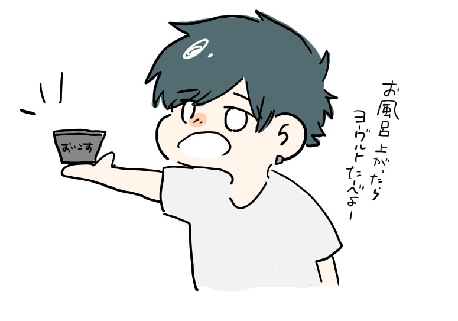

プロフィール

篠原 紬希 (Tsumugi Shinohara)
現在はPythonを主に学んでおり他にもJava,C言語などを学んできました。このサイトはwebサイト制作の復習もかねて作ったものです。
自分史
幼少期：岐阜県可児市でのびのびと育つ
岐阜県可児市で生まれる。好奇心旺盛で活発な、やんちゃな幼少期を過ごす。
小学生：怪我を乗り越えた日々の自主練習
バスケットボールを始める。自宅近くで毎日のように自主練習に打ち込み、6年生のころには背番号6番をもらい大会で準優勝を果たす。
中学生：絶望からのサポート、挫折から立ち上がる力
バスケ部でレギュラー入りするも大会直前に怪我。裏方としてチームを支え県ベスト6を達成。「挫折しても腐らずやり抜く力」を身につける。
高校生：文武両道と、徹底した「継続力」の習得
弓道部と勉強を両立。筋トレに目覚め、食生活管理を通じて「目標へコツコツ継続する力」を学ぶ。受験では趣味を封印し全力を注いだ。
大学生：趣味と実益の融合、ハードウェアへの探究
情報工学を学びつつ、ハードオフでのアルバイトを開始。HDDの診断やメンテナンス等、技術と趣味がシームレスに繋がる現在に至る。